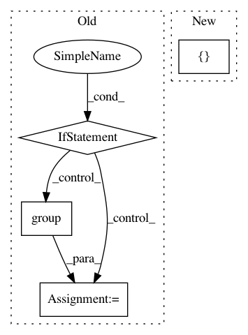

0741f86561249b49db3f6cf6068d21d95c8d9330,setup.py,,,#,15
Before Change
verstrline = open(VERSIONFILE, "rt").read()
VSRE = r"^__version__ = ["\"]([^"\"]*)["\"]"
mo = re.search(VSRE, verstrline, re.M)
if mo:
verstr = mo.group(1)
else:
raise RuntimeError("Unable to find version string in %s." % (VERSIONFILE,))
// Dependencies of GPflow
dependencies = ["numpy>=1.10.0", "scipy>=0.18.0", "pandas>=0.18.1"]
min_tf_version = "1.3.0"
// Only detect TF if not installed or outdated. If not, do not do not list as
After Change
package_data=package_data,
include_package_data=True,
test_suite="tests",
extras_require={"Tensorflow with GPU": [tf_gpu]},
classifiers=[
"License :: OSI Approved :: Apache Software License",
"Natural Language :: English",
In pattern: SUPERPATTERN
Frequency: 4
Non-data size: 4
Instances
Project Name: GPflow/GPflow
Commit Name: 0741f86561249b49db3f6cf6068d21d95c8d9330
Time: 2017-11-20
Author: art.art.v@gmail.com
File Name: setup.py
Class Name:
Method Name:
Project Name: eth-cscs/reframe
Commit Name: 1cde31a291ae4ef70de9698bb019d6916d29afdb
Time: 2020-09-10
Author: karakasis@cscs.ch
File Name: cscs-checks/compile/libsci_acc_symlink.py
Class Name: LibSciAccSymLinkTest
Method Name: __init__
Project Name: snipsco/snips-nlu
Commit Name: f83dd115acb0d119fa466fad51b473a30749f684
Time: 2017-05-11
Author: clement.doumouro@snips.ai
File Name: snips_nlu/intent_parser/regex_intent_parser.py
Class Name: RegexIntentParser
Method Name: get_slots
Project Name: nltk/nltk
Commit Name: 0bcc8da0344cddc9dfff82a788df519c19489500
Time: 2017-10-17
Author: lyyb46@gmail.com
File Name: nltk/tokenize/treebank.py
Class Name: TreebankWordTokenizer
Method Name: span_tokenize